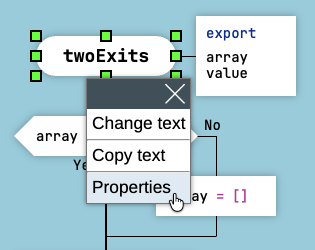
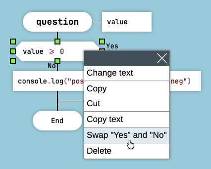
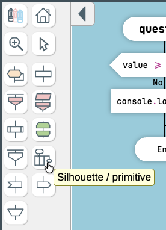

DRAKON Language Syntax
This document describes the main DRAKON language constructs used for programming in DrakonTech.
Hello, World
Here is the canonical "Hello, World" algorithm represented in DRAKON.

Hello, World in DRAKON
Procedure calls and assignments are placed inside Action icons. The Action icon has the shape of a rectangle.
Function Arguments
To add arguments to a function, right-click on the diagram header and choose "Properties" from the context menu.
Then add one argument per line, without commas.
You can also set function flags such as export and async in the "Properties" dialog.

Function Arguments
The function arguments and flags will be displayed in the "Formal Parameters" icon on the right side of the diagram header.
Question
The Question icon is the DRAKON equivalent of the if-else construct.

The "Question" Icon
Follow the rule: "the farther to the right, the worse."
- The happy path should go down the skewer (the main vertical line).
- Less successful scenarios should branch to the right.
- Error handling should definitely go to the right.
- If both scenarios are equally successful, the most expected and most frequent one should go down the skewer. The less frequent one should go to the right.
Note that the Yes and No exits can be swapped. To do that, right-click on a Question icon and choose "Swap Yes and No" from the context menu.

Swap Yes and No
Since the exits can be swapped, the NOT logical operator and the NOT EQUAL (!=) operator are redundant in DRAKON.
Do not use NOT and NOT EQUAL operators when programming in DRAKON because they add unnecessary complexity.
Visual Logical Formulas
DRAKON does not encourage the use of logical AND and OR operators. They quickly get out of control, especially when the number of operands exceeds two.
Instead, visual logical formulas should be used.
Here is the visual formula for the AND operator: valueA AND valueB AND valueC.

Visual Formula for AND
Here is the inverted formula for the AND operator: one === 1 AND two === 2 AND three === 3. Use the inverted formula when you want to express the intention if (one === 1 AND two === 2 AND three === 3) { ... } and the then clause must go to the right on the flowchart.

Inverted Formula for AND
The OR operator can be transformed into visual logical formulas in a similar way.
Here is the visual formula for the OR operator: valueA OR valueB OR valueC.

Visual Formula for OR
Here is the inverted formula for the OR operator.

Inverted Formula for OR
As with simple conditions, there is no need to use the NOT and NOT EQUAL operators here.
Select
The Select icon is the DRAKON equivalent of the switch-case construct.
The Case icons contain the case values.
To add a default case, add an empty Case icon on the right.

The "Select" Icon
Whenever possible, it is recommended to arrange case values in ascending or descending order.
Foreach Loop
The Foreach Loop icon is the DRAKON equivalent of for and foreach loops.
The format of the Foreach Loop icon differs slightly depending on the target language.

Array Iteration in JavaScript and Lua

Object Iteration in JavaScript and Lua

For-Style Loop in JavaScript and Lua
The Foreach Loop is not supported by the Clojure generator.
It is possible to exit a Foreach Loop early using a Question icon.
Note that the exit can only be directed to the point immediately after the loop.
This will not work:

Early Loop Exit That Causes an Error
This is the correct way to exit:

Correct Early Loop Exit
It is also acceptable to terminate the function with a return statement. In that case, there is no need to direct the exit outside the loop construct.
However, do not use the break keyword, because the code generator does not support it.
Arrow Loop
DRAKON replaces arrows in flowcharts with ordinary lines.
There is, however, one case where DRAKON uses an arrow: the Arrow Loop.
This makes loops instantly visible on a diagram.
If there is an arrow, there is a loop.
The Arrow Loop is the DRAKON equivalent of the while and do-while constructs.
Here is how a while construct looks in DRAKON. First, the loop condition is checked. Then the loop body follows.

While Loop in DRAKON
Here is how a do-while construct looks in DRAKON. First, the loop body is executed. Then the loop condition is checked.

Do-While Loop in DRAKON
In this example, the loop implements the action-check-action pattern:

Do-While-Do Loop in DRAKON
The Arrow Loop is not supported by the Clojure generator.
Silhouette
There are two types of DRAKON diagrams: primitives and silhouettes.
A silhouette consists of several branches. A silhouette divides a complex algorithm into logical parts without decomposition.
To convert a primitive into a silhouette and back, click the "Silhouette/Primitive" button on the toolbar.

How to Create a Silhouette in DrakonTech
Decomposition is a useful technique, but it comes at a cost. Very often, it is better to use a silhouette instead of decomposition. The key advantage of a silhouette is that it does not require excessive passing of function arguments and return values. At the same time, the entire algorithm remains on a single diagram.
The silhouette branches are the chapters of your function. Therefore, it is important to give them meaningful names. Good branch names help explain the algorithm.
The first silhouette branch is on the left. The last branch is on the right. Between these boundaries, branches may follow in any order. However, arranging them from left to right is considered good practice.

Silhouette DRAKON Diagram
Use Address icons to control which branch will execute next.
A single silhouette branch may contain several Address icons.
Silhouette Loop
One or more branches can be executed repeatedly. This is called a silhouette loop.
To create a silhouette loop, direct a transition from an Address icon to the same branch that contains the loop body.
Do not forget to add an exit condition. Otherwise, you will end up with an infinite loop.
DrakonTech marks the branch headers and the Address icons involved in the loop with special loop markers.

Silhouette Loop
This is another technique DRAKON uses to make loops immediately stand out.
Catch Branch
For JavaScript, DrakonTech supports a special branch with the reserved name catch. A catch branch generates an exception handler of the form catch (ex) { ... }.
To access the caught exception object, call the getHandlerData() function.

Catch Branch
Other branches are not allowed to reference the catch branch.